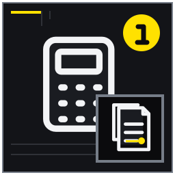

相場の数字をそのまま自宅へ当てない
募集事例と成約、時点、条件差を区別する。
MITSUKE RENT GUIDE 02
相場の一点当てではなく、物件比較、賃料帯、空室、運営費、突発修繕、税務確認をつないで意思決定する記事。
賃料と資金繰りでは、資料が全部そろうのを待つより、確認済み・未確認・専門家へ聞く事項を分けるほうが実務は進みます。この記事は見付の戸建てを貸した場合の家賃、初期費用、毎月の手取り、将来修繕を把握したい所有者に向け、14の論点を現地確認と相談準備の順に整理しました。相場の一点当てではなく、物件比較、賃料帯、空室、運営費、突発修繕、税務確認をつないで意思決定する記事。 結論を保証するものではなく、対象物件と契約条件に合わせて確認先を選ぶためのガイドです。
想定している検索時の疑問は、「磐田市見付 戸建て 家賃相場」「戸建て賃貸 オーナー 手取り」「実家 貸す 収支」で、募集賃料の根拠と赤字リスクを知りたい。 以下では広告上の一言で判断せず、記録、比較、相談境界、次の行動を章ごとに示します。
募集事例と成約、時点、条件差を区別する。
募集準備、仲介、保証、鍵、清掃等を月次費用と分ける。

契約更新対応、原状回復、再募集費を長期収支へ含める。
閲覧、問い合わせ、内見、申込の段階別に原因を探る。
募集事例と成約、時点、条件差を区別する。 相場を見るときは、掲載中の募集賃料を「見付の戸建てならこの金額」と読まないことが出発点です。広告に残っているのはまだ契約に至っていない住戸も含み、掲載開始日や値下げ履歴が分からなければ成約水準とは区別できません。まず調査日を固定し、同じ時点に募集されている戸建てを集め、家賃だけでなく共益費、駐車場代、敷金・礼金、短期解約条件まで含む入居者負担を一列に並べます。
同じ3LDKでも駐車台数と築年で候補帯が変わる例を示す。 例えば同じ3LDKでも、敷地内に普通車2台を並列で置ける家と、軽自動車1台だけの家では候補者の幅が違います。築年が近くても、見付の中で通学や買物の動線、道路幅、庭の手入れ量、エアコンや給湯器の年式が異なれば単純比較はできません。自宅に近い事例を三件以上選び、一致点と相違点をそれぞれ記すと、採用する賃料帯の説明ができます。
公開募集価格は成約額や将来賃料を保証しない。 高い募集例だけを根拠にすると、空室期間を長く見積もる必要が生じます。一方、安い事例には設備不良や定期借家など表面から見えない事情があるかもしれません。公開価格は将来の成約を保証せず、過去の査定書も現在の需給を示すとは限りません。仲介会社へ聞くときは「いくらで貸せるか」だけでなく、想定する募集期間と比較した物件名を確認します。
比較日と情報源を記録する。 収支試算表には、調査日、情報源、掲載開始を確認できた日、家賃と付帯費用、条件差を記録します。そのうえで、比較事例の中央値を機械的に採らず、駐車条件など自宅固有の加点・減点を言葉で残してください。根拠が更新されたら古い数値を消さず、見直した日と理由を追記します。これにより家族や別の担当者が、希望額ではなく同じ材料から再計算できます。
立地、床面積、築年、駐車、設備の近さを優先する。 比較物件は「戸建て」という一点では足りません。所在地の生活圏、延床面積と間取り、築年と改修履歴、駐車可能台数、募集設備の五軸を揃えます。さらに、専用庭の広さ、自治会やごみ出しの条件、ペット可否が自宅の募集条件に近いかも確認します。マンションや築浅アパートは入居者の選択肢にはなっても、戸建ての賃料を直接決める比較対象とは分けて扱います。
見付中心部と郊外の戸建てを距離だけで比較しない例を扱う。 見付中心部に近い70平方メートルの家と、同じ磐田市内でも車移動が前提の100平方メートルの家を比べるなら、距離だけで優劣を付けません。前者は生活利便性、後者は広さと駐車の余裕が評価される可能性があります。自宅が築30年で水回り未更新なら、築年だけ近い全面改修済み物件より、設備状態が近い募集例を重く見るほうが現実的です。
都合のよい事例だけを抜き出さない。 比較表には都合のよい三件だけを残さず、条件が近いのに安い事例も含めます。写真で駐車できそうに見えても、現地の間口や道路幅が不明なら二台可と断定しません。また、掲載が終了した理由は成約とは限らないため、消えた広告を成約賃料として扱わないことも重要です。確認不能の欄は空欄ではなく「未確認」とし、推測が計算へ混ざるのを防ぎます。
比較表に違いを赤字で書く。 実務では一件ごとに五軸を〇・△・×で採点し、差が賃料へどの方向に働くか短いコメントを付けます。床面積は登記事項や図面、駐車は現地採寸、設備は型番写真で自宅側の基準を固めます。仲介会社に意見を求める際も同じ表を渡せば、担当者ごとの感覚差を比較できます。月に一度表を更新し、募集終了した事例と新規事例を入れ替えてください。
募集期間と反響を見ながら調整できる帯を設計する。 賃料は一点で決めず、弱気・基準・強気の三案を同じ費目で試算します。例えば月7万5千円、8万円、8万5千円と置き、年間家賃を単純に12倍するだけでなく、それぞれの想定空室月数を差し引きます。高い案ほど常に手取りが増えるわけではなく、8万5千円で三か月空くと年間収入は76万5千円、8万円で一か月空くと88万円になり、逆転が起こります。
8万円一点ではなく複数案で空室月数を比べる。 三案には募集時の行動も結び付けます。強気案は写真や内見準備を整えたうえで二週間試し、問い合わせが少なければ基準案へ移す、基準案で内見はあるが申込がなければ条件説明を見直す、と期限を先に決めます。弱気案は早期入居を優先する事情がある場合の下限であり、根拠なく値下げする案ではありません。各案で敷金など初期条件も揃えて比較します。
高値募集の長期空室と安値の機会損失を両方見る。 家賃を下げる前に、反響がない原因が価格なのか広告情報なのかを分けます。駐車寸法が不明、庭管理の分担が読めない、室内写真が暗い状態では、値下げしても不安が残ります。また一度契約すれば募集時のように自由な改定はできないため、早く決めたい事情だけで低い賃料へ固定しないよう注意します。反対に、根拠のない高値を長期間維持することも空室損を増やします。
見直す日と判断指標を決める。 収支表には各案の月額、空室月数、年間入金、管理料、広告・仲介関連費を並べ、差額を自動で追える計算式を残します。募集開始日、反響確認日、条件変更の決定者も同じ行に記載します。判断指標は閲覧数だけでなく、問い合わせ、内見、申込の段階別に設定してください。変更時には旧条件と新条件、変更理由を残し、次の募集で再利用できるデータにします。
募集準備、仲介、保証、鍵、清掃等を月次費用と分ける。 初年度には、毎年繰り返さない支出が集中します。残置物処分、ハウスクリーニング、畳や網戸の補修、鍵交換、安全確認、募集用写真、仲介に関する費用などを、通常の月次運営費と別表にします。初期工事の請求が入居後に来る場合もあるため、費用の発生日ではなく実際の支払予定月まで確認し、家賃入金前に必要となる現金を把握します。
入居前に網戸・鍵・清掃が重なるケースを試算する。 例えば網戸4枚の張替え、玄関鍵の交換、庭木剪定、清掃が同じ月に重なると、個々は小さく見えても合計は膨らみます。さらに給湯器の点検で交換提案が出れば、募集開始が遅れるか、追加資金が必要です。見積は税込総額、作業範囲、廃材処分、出張費を揃えて比べます。工事をしない案も残し、賃料や募集期間への影響を仲介担当へ確認します。
費用負担や名称は契約・事業者ごとに異なる。 仲介手数料、広告料、保証会社関連費、鍵交換費は、誰が負担するか、契約成立時だけ発生するかが契約や事業者で異なります。名称だけで所有者負担と決めず、見積書と媒介・管理条件を確認してください。また、修繕工事が税務上その年の必要経費になるか、資産として扱われるかは内容により変わるため、資金繰り表と税務判断を混ぜません。
見積の税込額と支払時期を並べる。 初年度費用表には、必須・募集力向上・保留の三分類、税込見積額、支払先、支払期限、着手条件を記します。最低でも「契約前に払う額」「入居月までに払う額」「入居後に払う額」を集計し、手元資金で賄えるか確認します。予備費も別行に置き、使わなかった分を収益扱いせず修繕準備金へ回すと、初年度黒字の見かけに惑わされません。
管理、保険、固定資産税、庭管理などを年間化する。 運営費は月額表示の項目と年払いの項目をすべて年額へ換算します。管理委託料、振込手数料、家賃保証に関する費用、火災・施設賠償等の保険料、固定資産税・都市計画税、共用で負担する水道や電気、庭木剪定、浄化槽があれば保守点検などを一枚に集めます。戸建ては共益費が見えにくいため、所有者が負担する屋外管理を漏らさないことが大切です。
月額管理料と年二回の剪定を同じ表へ入れる。 月8万円の家賃で管理料を税込5.5％と仮定すれば月4,400円、年52,800円です。ここへ固定資産税等9万円、保険2万円、年二回の剪定6万円、振込等6千円を足すと、空室と修繕を入れる前でも年22万8,800円になります。実際の率や税額は契約・通知書で差し替えますが、月額家賃から管理料だけを引いた数字を「手取り」と呼ばないための例です。
固定資産税額と所得税額を混同しない。 固定資産税等は不動産を所有することで生じる支出で、家賃収入に対する所得税等とは性質も算定時期も違います。納税通知書の年税額を使い、所得税を同じ費目へ二重計上しないようにします。保険も補償範囲と免責金額を確認し、保険に入っているから修繕準備が不要とは考えません。入居者負担と所有者負担が曖昧な費目は契約案で確かめます。
前年通知書と管理条件を確認する。 収支表では月次費を12倍し、年払い費と不定期費を加え、支払月を資金繰り欄へ配置します。固定資産税の分納月に剪定費や保険更新が重なるなら、その月の残高がマイナスにならないかを見ます。前年実績のある費目は通知書や領収書へリンクし、見積段階は「仮」と表示します。半年ごとに実績との差を確認し、翌年予算を上書きではなく改訂履歴として残します。
退去から再募集、修繕、入居までの無収入期間を含める。 空室は「起きたら考える損失」ではなく、家賃収入が止まる期間として先に計算します。退去通知を受けてから、退去立会い、原状回復の見積と工事、広告再開、内見、審査、契約、次の入居日まで、複数の工程で無収入期間が生じます。年間収入は家賃×12ではなく、家賃×実際に入金される月数で置き、管理料が空室中も発生する契約かも確認します。
二年に一度一か月空く仮定と長期入居案を比べる。 月8万円で二年に一度一か月空く想定なら、平均空室損は年4万円です。しかし退去後の清掃に二週間、募集に一か月半かかれば二か月分の16万円が一度に消えます。慎重案では三年に一度二か月空室、さらに再募集費が発生すると置き、長期入居案と比較します。平均額だけでなく、支出が集中する退去年の口座残高も確認することが重要です。
過去の入居期間が将来も続くとは限らない。 過去に長期入居だったことは将来の入居期間を保証しません。転勤、家族構成、建物状態、市場の募集数で結果は変わります。また、空室損を避けるため安全確認や必要修繕を省くのは順序が逆です。募集開始を急いで説明不足の条件を出すと、内見後の辞退や入居後のトラブルにつながります。空室率は希望ではなく、募集実績と工程日数から更新します。
慎重案に空室予備費を入れる。 収支試算には基準案と慎重案の空室月数を入力し、空室中にも続く税、保険、基本管理費、庭管理を残します。退去連絡から次の契約までの日付を記録し、「工事待ち」「反響不足」「審査・契約」のどこで日数を使ったか分解してください。原因が分かれば、次回は業者の事前手配や募集条件の修正で短縮できます。空室予備費は専用口座で家賃一〜二か月分を目安に仮置きします。
給湯器、水回り、雨漏り等の故障に備える。 突発修繕は年平均の少額だけでなく、一度に払える現金枠で考えます。戸建てでは給湯器、トイレ、給水管、エアコン、雨漏り、排水詰まりなどが生活へ直結し、故障時期を正確に予測できません。設備台帳に設置年、型番、過去修理、交換見積を記し、古い設備ほど予備費を厚くします。計画修繕用の積立と、入居中の緊急対応資金は分けて管理します。
冬に給湯器が停止し緊急交換する例を金額未確定で置く。 冬の夜に給湯器が停止した場合、所有者は原因確認、修理可否、代替手段、交換手配を短時間で判断する必要があります。仮に交換一式25万円、緊急出張2万円と見込むなら、27万円をすぐ支払える枠を置きます。実額は現物と見積で変わりますが、残高が5万円しかない計画では、家賃収支が年単位で黒字でも対応できません。漏水なら止水と復旧費も別に考えます。
交換要否や税務区分は現物と工事内容で変わる。 設備が古いという理由だけで全交換を決める必要はありませんが、故障後に型番を探し始めると復旧が遅れます。反対に、保険で賄えると決め付けるのも危険です。経年劣化や免責、対象外工事があり、保険金の入金前に支払いが必要な場合があります。修理か資本的支出かという税務上の扱いも工事内容で異なるため、請求書の内訳と写真を保存します。
設備年式と概算見積を一覧にする。 収支表には設備ごとの想定交換時期と概算額を置き、年平均額と即時必要額の二列を作ります。例えば給湯器27万円を九年で均すだけでなく、今年故障した場合も払える残高を確保します。緊急連絡先、相見積を省略できる上限、承認者を決めておけば復旧が止まりません。使用した予備費は次月以降の家賃から補充し、通常の生活費へ戻さない運用にします。
契約更新対応、原状回復、再募集費を長期収支へ含める。 更新や退去に伴う支出は毎年発生しなくても、長期収支から外せません。契約更新の事務、退去立会い、残置物確認、ハウスクリーニング、所有者負担となる原状回復、鍵交換、再募集の広告・仲介関連費を列挙します。四年ごとの退去を想定するなら、退去年の一括支出と、四年間で均した年間積立の両方を表示して資金不足を防ぎます。
四年後退去時の清掃と募集を月割りで積む。 例えば退去時に清掃8万円、畳・網戸等7万円、鍵交換3万円、募集関連費8万円で合計26万円を見込むなら、四年で均すと年6万5千円、月約5,417円です。これに空室二か月16万円が加われば退去年の影響は42万円になります。通常年の手取りだけを家族へ示すと、この落差が見えません。入居期間を二年・四年・六年に変え、積立額の耐久性を確認します。
原状回復の負担はガイドラインと個別契約、損耗状況を確認する。 原状回復費のすべてを入居者へ請求できるとは限りません。通常損耗、契約内容、入居期間、故意過失の有無などを整理し、国土交通省のガイドラインと個別契約に沿って判断します。更新料や事務手数料の帰属も契約ごとに異なります。退去前から負担割合を断定せず、入居時写真、修繕履歴、立会い記録を揃えて専門的な確認へ渡します。
退去準備金の積立額を仮決めする。 退去準備金は家賃入金の都度、専用の費目へ振り分けます。試算表には想定退去周期、原状回復予算、空室月数、再募集費を入力し、積立残高を毎月更新してください。実際に退去があったら、見積額と精算後の所有者負担を分け、差額の理由を記録します。積立を使い切った場合は、次の四年間ではなく残存設備の状態も見て補充計画を作り直します。
工事費の回収年数と資金繰りを家賃収支から検討する。 リフォーム費は家賃収支と分け、投資額、資金調達、増えると見込む収入、減らせる空室期間を別表で検証します。工事費を家賃の総額だけで割ると、管理費や税、借入利息、追加修繕が抜けます。まず「安全上必要で賃料に関係なく行う工事」と「募集力向上を期待する工事」を分け、後者だけについて工事なし案と最小工事案を比べます。
150万円工事を賃料上昇だけで回収できるか比較する。 150万円の改修で家賃が月5千円上がると仮定しても、単純回収は300か月、25年です。家賃上昇が月1万円でも12年6か月かかり、その間の空室、金利、再修繕を含んでいません。一方、工事により募集開始が一か月遅れれば8万円の機会損失も生じます。賃料差だけでなく、成約までの期間や故障回避効果を分けて見積もり、期待値を保証のように扱いません。
賃料上昇を確約せず、金利や追加工事も考慮する。 借入を使う場合は、月返済額だけでなく融資手数料、金利変動、返済開始月を資金繰りへ入れます。工事代金の支払いが融資実行より先なら、つなぎの現金も必要です。また工事後に追加箇所が判明する可能性を予備費として置きます。工事の税務区分は名称では決まらないため、見積書を「一式」のままにせず、施工箇所と内容が分かる内訳を受け取ります。
工事なし案と最小工事案を残す。 別表には工事なし、最低限、拡張の三案を並べ、総工事費、自己資金、借入、月返済、想定賃料差、募集開始日、回収年数を記載します。回収年数は（工事費と資金調達費）÷年間の手取り増加額で再計算します。空室が一か月増えた場合も試し、家族の生活資金を崩さず実行できる上限を決めます。採用しなかった案も理由を残すと、後日の追加工事判断がぶれません。
税務上の収入・必要経費と手元資金の動きを別々に見る。 不動産所得の計算と銀行口座の残高は同じ動きをしません。家賃の入金時期、敷金等の預り、借入元金の返済、減価償却、修繕工事の税務区分などにより差が出ます。経営判断では月別の現金収支を追い、申告準備では収入と必要経費を根拠資料に基づいて整理します。一つの「利益」欄で両方を表そうとせず、現金表と税務確認表を並行して持ちます。
減価償却があっても現金支出時期が違う例を説明する。 例えば30万円の設備工事を現金で払えば、その月の口座残高は30万円減ります。しかし税務上、その全額を同じ年の修繕費とできるかは工事内容により異なり、資産計上して減価償却する場合もあります。逆に減価償却費は、その年に同額の現金が出ていなくても必要経費の計算へ関係します。この差を理解せず、所得が黒字だから現金も十分と判断しないことが重要です。
個別の申告判断は税務署または税理士へ確認する。 個別の経費性や計上時期は、国税庁の情報を確認し、判断が難しい工事や所有形態は税務署または税理士へ相談します。家族名義の口座へ家賃を入れる、複数共有者が費用を払うなどの運用は、便宜だけで決めないでください。契約上の賃貸人、所有者、入金先、実際の費用負担者が追えるようにし、領収書の宛名と支払経路を保存します。
領収書と契約書の保存方法を決める。 毎月の資金繰り表には家賃入金、返金、管理料、税、保険、修繕、借入返済を入れ、月末残高を通帳と照合します。別の税務確認表には、契約書、管理明細、納税通知書、領収書、工事前後写真の保存場所を記します。未判定の支出は仮に経費へ入れて利益を小さくせず、「税務確認待ち」として分離します。申告後も根拠資料の所在と確認日を残してください。
誰の収入で誰の費用に充てるかを曖昧にしない。 家賃を親の生活費や施設費へ充てる計画では、物件収支と家族への送金を明確に分けます。まず賃貸口座内で税、保険、管理、空室、修繕の必要額を確保し、その後に送金可能額を決めます。月8万円の入金をそのまま8万円使うと、固定資産税や給湯器交換の月に不足します。送金額は家賃ではなく、予備費を差し引いた後の配分可能額を基準にします。
親所有物件の賃料を施設費へ充てる家族管理例を扱う。 年間家賃96万円でも、運営費23万円、平均空室損4万円、退去積立6万5千円、設備積立10万円を置けば、配分前は52万5千円、月平均4万3,750円です。さらに初年度費用や所得税等の影響は別に確認します。施設費として毎月6万円が必要なら、賃貸だけで賄える前提は成立しません。不足額を年金や預金等のどこから補うか、家族全体の表で確認します。
贈与、代理、財産管理の判断を不動産会社だけで行わない。 所有者本人のための支出と、物件維持の支出を同じカードや現金で払うと記録が崩れます。家族が立て替えた場合は、日付、目的、領収書、返金日を残します。また、家賃の受取人や所得の帰属は送金先を変えるだけで決まるものではありません。共有、相続、代理など権限が関わる場合は、契約と口座を整える前に法務・税務の専門家へ確認します。
口座名義と支払経路を専門家に確認する。 家族会議では、最低維持残高、毎月送金できる上限、緊急修繕時に送金を減らす条件を決めます。例えば口座残高が50万円を下回ったら送金を停止し、70万円へ戻るまで積み増す、と数値で合意します。施設費の改定や空室が発生したら臨時レビューを行い、誰が通帳と管理明細を確認するかも登録します。善意の立替や送金が不明金にならない仕組みが継続性を支えます。
閲覧、問い合わせ、内見、申込の段階別に原因を探る。 募集開始後は、家賃を感覚で上下させず反響の段階を測ります。広告閲覧、詳細ページへの遷移、問い合わせ、内見予約、内見実施、申込の件数を週単位で記録します。閲覧自体が少なければ公開範囲や写真・見出し、閲覧は多いのに問い合わせがなければ価格や条件説明、内見後に進まなければ現地状態や契約条件を疑うなど、詰まり方で対策を変えます。
閲覧はあるが内見ゼロなら写真と条件を再点検する。 例えば二週間で閲覧300件、問い合わせ0件なら、相場より高い可能性に加え、駐車台数やペット条件が不明で候補から外れていないか確認します。問い合わせ5件、内見3件、申込0件なら、庭の手入れ負担、設備の古さ、室内の臭いなど現地で初めて分かる要因を聞き取ります。単に5千円下げる前に、辞退理由を仲介担当から同じ分類で集めることが有効です。
短期間の少数データで拙速に値下げしない。 一件の反応や担当者の印象だけで即日変更すると、どの対策が効いたか分からなくなります。一方、強気案を一か月放置すれば空室損が積み上がります。募集前に二週間、四週間などのレビュー日を置き、変更は一度に一項目を基本とします。家賃を変更する場合は、既に問い合わせた候補者への案内や広告表示の整合も確認し、不公平な説明にならないようにします。
二週間または四週間のレビュー日を設定する。 反響表には期間、掲載媒体、表示条件、閲覧、問い合わせ、内見、申込、辞退理由、実施した変更を記します。収支表とつなぎ、5千円の値下げによる年6万円の収入差と、空室一か月8万円の回避可能性を比較します。結果は成約後も保存し、次回退去時の初期賃料へ反映します。反響が改善しない場合は、価格だけでなく修繕や募集条件の専門的な再確認を依頼します。
保有年数と将来費用を含めて賃貸・売却を比べる。 売却と賃貸は、受け取る総額ではなく同じ期間・同じ費用範囲で比べます。賃貸は例えば五年間の家賃入金から空室、管理、税、保険、修繕、退去費、借入返済を差し引き、五年後に残る建物と売却時費用も考えます。売却は想定成約価格から仲介、登記、測量や片付け等の必要費、税務上の影響を確認し、手取りの入金時期を揃えます。
五年保有案と早期売却案の家族負担を並べる。 賃貸で年50万円の配分可能額が五年続けば250万円ですが、大規模修繕80万円と退去費42万円がその間にあれば128万円です。売却手取りが仮に1,000万円でも、それは査定額そのものではなく、諸費用や税の確認後の額で比較する必要があります。さらに売却代金を五年間どう保有・使用するか、賃貸では五年後に売却する場合の状態をどう置くかで結果が変わります。
将来価格や入居率は保証されず、売却税務も個別確認が必要。 賃料、空室率、将来の修繕、売却価格はいずれも保証された数値ではありません。賃貸だけ楽観案、売却だけ慎重案にすると結論が誘導されます。両案に基準・慎重の幅を持たせ、家族の現地対応時間、将来住む可能性、すぐに現金が必要かという非金銭条件も同じ表へ入れます。古い査定と最新の募集事例を混ぜず、基準日を合わせてください。
比較期間と仮定を表の上部に記す。 比較表の上部に基準日、比較期間、所有者の希望、未算入費用を書きます。賃貸欄には五年間の年別現金収支と期末残高、売却欄には想定手取りと入金予定月を置きます。税務・法務上未確認の項目はゼロとせず保留表示にします。家族会議では金額だけで決定せず、どの前提が変われば結論を見直すかを合意し、査定や見積の更新期限も登録します。
数字の根拠、基準日、未確認費用を家族共有できる形にする。 収支表は一度作って終わりではなく、物件の実績を引き継ぐ資料として実家カルテへ索引化します。募集賃料の根拠、契約賃料、月次入金、運営費、空室期間、修繕履歴、税務確認事項を、それぞれ原資料へたどれる形で整理します。カルテへ領収書の全画像を無秩序に集めるのではなく、資料名、対象期間、保存場所、最終更新日、管理者を一覧にします。
家賃帯・修繕枠・空室仮定を一枚にまとめる。 例えば給湯器交換なら、故障受付日、型番、見積、承認者、工事日、支払額、保証期限を一件として登録します。次回の収支見直しでは、概算27万円を実額へ差し替え、設備積立の残高と補充計画を更新します。家賃変更も、旧賃料、反響件数、変更日、成約結果をつなげれば、数年後の再募集で同じ調査を最初から繰り返さずに済みます。
実家カルテは査定や税務申告そのものではない。 実家カルテは税務申告書、賃貸借契約書、建物診断、管理会社の正式な報告を代替しません。また、家族が閲覧できることと、契約変更や支払いを決定できる権限は別です。個人情報を含む入居申込書などは必要以上に共有せず、保管期間と閲覧者を定めます。未確認事項を推測で埋めず、相談先と期限を記したまま引き継ぐことが安全です。
資料を添えて賃貸査定相談を予約する。 最終ページには、現在の基準賃料、最低維持残高、空室・退去・設備の積立残高、次回の家賃レビュー日、税務確認担当をまとめます。更新は月次、退去時、修繕時、家族状況変更時の四つを基本にし、誰が何を直すか決めます。相談時にはこの索引と最新の収支表を持参し、未確認欄を質問票として使ってください。結論だけでなく前提と根拠が残ることが、長期の資金繰りを守ります。
賃料と資金繰りの準備状況を確認するため、完了・未完了だけでなく根拠資料の場所も記してください。
参考帯は示せても、現況、駐車、築年、設備、募集時点で変わるため現地確認と比較物件の条件合わせが必要。まず現況を変えずに相談材料をそろえると、必要な作業の順番を決めやすくなります。
ほかに保険、税、修繕、空室、庭管理等があり、年単位で確認する。築年数だけで可否を決めず、安全性、設備、費用、募集条件を対象物件ごとに確認します。
工事内容などで税務上の扱いが変わり得るため、国税庁資料と税務専門家へ確認する。相談に参加できることと契約権限は別なので、名義と委任の状況を資料で確かめます。
募集条件の変更は可能だが、反響段階と見直し期限を決めて判断する。想定賃料と安全上必要な工事を先に整理し、印象改善工事は回収可能性を見て判断します。
同じ期間、費用範囲、家族負担、将来利用を揃え、保証されない仮定を明記して比べる。カルテは未確認事項を専門家へ渡す索引であり、法務・税務・建物診断の結論そのものではありません。
制度や手続は更新されるため、公開元の最新情報と対象範囲を確認してください。リンク先の説明は個別物件への判断を代替しません。
本記事は2026年8月時点の一般的な情報整理と相談準備を目的としています。対象物件の安全性、適法性、契約条件、税務上の取扱い、修繕の必要性を診断・保証するものではありません。法務は弁護士・司法書士、税務は税務署・税理士、建物の安全や工事は建築士・施工業者、行政制度は担当窓口へ個別に確認してください。富士ヶ丘サービス株式会社は宅地建物取引業者として、戸建て賃貸の現況整理、募集条件、管理方法、売却を含む選択肢の相談を承ります。